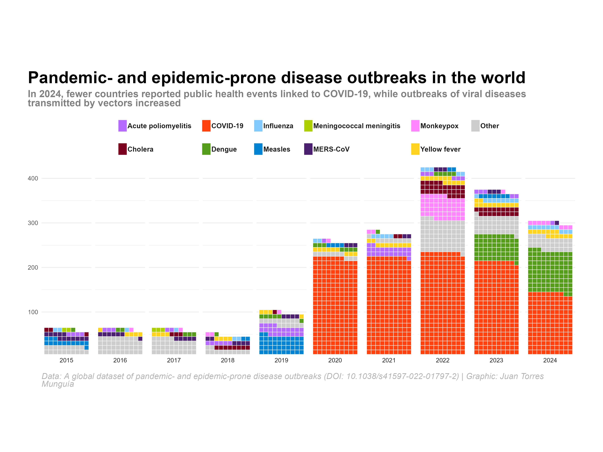

library(tidyverse) # Tidy data analysis framework
library(readxl) # Read Excel files
library(httr) # Perform HTTP requests
library(showtext) # Add custom fonts to plots
library(ggtext) # Use rich text elements in ggplot
library(waffle) # Create waffle chartsA waffle chart of disease outbreaks in the world
Using {ggplot2} in R to create a waffle chart to visualize disease outbreaks in the world
data visualization
disease outbreaks
epidemics
pandemics
tidyverse
ggplot2
waffle chart
Overview
In these notes, I will show you how to use {ggplot} to create a waffle chart about the frequency of disease outbreaks in the world. The final output will look like this:

About the data
The source of information is the global dataset of pandemic- and epidemic-prone disease outbreaks, whose data is freely available at the GitHub repository of the disease outbreaks project.
The unit of analysis in the database is an outbreak, defined as the occurrence of at least one case of a specific disease in a country -or territory- during a particular year. Therefore, a country -or territory- cannot have more than one outbreak of the same disease in the same year, although it may experience outbreaks of different diseases within the same year. A country can only have multiple outbreaks of the same disease if they occur in different years.
The dataset includes information on over 3,000 pandemic- and epidemic-prone disease outbreaks associated with more than 80 different infectious diseases, occurring globally from January 1996 to the present. The diseases are classified according to the International Classification of Diseases, 10th Revision (ICD-10), and the dataset contains information on the year, country, and disease for each outbreak.
The dataset of pandemic- and epidemic-prone disease outbreaks is also part of the Humanitarian Data Exchange coordinated by the United Nations Office for the Coordination of Humanitarian Affairs (OCHA).
Set-up
To create the waffle chart, we will use the following R packages:
Loading data from GitHub
The dataset is stored in an Excel. We will download it from the GitHub repository and load it into R:
# Define the GitHub raw content URL
link_data <- "https://github.com/jatorresmunguia/disease_outbreak_news/raw/refs/heads/main/Humanitarian%20Data%20Exchange/data_2_share/disease_outbreaks_HDX.xlsx"
# Create a temporary file to store the data
temp <- tempfile(fileext = ".xlsx")
# Download the data from GitHub using authentication
get_req <- GET(
link_data,
authenticate(Sys.getenv("GITHUB_PAT"), ""),
write_disk(path = temp)
)
# Read the Excel file into R
outbreaks <- read_excel(temp)Data wrangling
We will group the data by year and disease, and then filter the top 10 diseases from 1996 to 2024. We will also group the data by year and disease, and then filter the top 10 diseases from 2015 to 2024. Finally, we will create a factor variable for the top 10 diseases and the “Other” category:
# Top 10 diseases 1996-2024
top_10_icd104n <- outbreaks |>
filter(Year < 2025) |>
group_by(icd104n) |>
summarise(freq = n(), .groups = "drop") |>
arrange(-freq) |>
slice_head(n = 10)
# Only top-10 categories and Others
outbreaks_year_disease_grouped <- outbreaks |>
filter(Year < 2025 & Year > 2014) |>
mutate(icd104n = ifelse(icd104n %in% top_10_icd104n$icd104n, icd104n, "Other")) |> # Group the diseases
group_by(Year, icd104n) |>
summarise(freq = n(), .groups = "drop") |> # Count the number of outbreaks
arrange(-freq)
# Create a factor variable for the top 10 diseases and the "Other" category
outbreaks_year_disease_grouped <- outbreaks_year_disease_grouped |>
mutate(icd104n = factor(icd104n,
levels = c(
"Acute poliomyelitis, unspecified", "Classical cholera", "COVID-19, virus identified",
"Dengue, unspecified", "Influenza due to identified zoonotic or pandemic influenza virus", "Measles",
"Meningococcal meningitis", "Middle East respiratory syndrome coronavirus [MERS-CoV]", "Monkeypox",
"Yellow fever, unspecified", "Other"
),
labels = c(
"Acute poliomyelitis", "Cholera", "COVID-19", "Dengue", "Influenza",
"Measles", "Meningococcal meningitis", "MERS-CoV", "Monkeypox",
"Yellow fever", "Other"
)
))Set theme settings and define fonts, colors, and text to be used in the waffle chart
# Custom theme for the waffle chart
theme_waffle_chart <- function() {
theme_minimal(
base_family = "Roboto Condensed" # Base theme with custom font
) +
# Custom theme settings
theme(
# Axis settings
axis.title = element_blank(), # Remove axis title
axis.line = element_blank(), # Remove axis line
# Title settings
plot.title.position = "plot", # Position of the title
plot.title = element_textbox(
color = "black",
face = "bold",
size = 24,
margin = margin(5, 0, 5, 0), # Top, right, bottom, left
width = unit(1, "npc") # Width of the title, npc == 1 corresponds to the full width of the plot
),
# Subtitle settings
plot.subtitle = element_textbox(
color = "grey50",
face = "bold",
size = 14,
margin = margin(0, 0, 10, 0),
width = unit(1, "npc")
),
# Legend settings
legend.position = "top",
legend.title = element_blank(),
legend.key.height = unit(0.5, "cm"), # Height of the legend key
legend.key.width = unit(0.5, "cm"), # Width of the legend key
legend.spacing.x = unit(0.2, "cm"),
legend.key.spacing = unit(0.5, "cm"), # Spacing between legend keys
legend.text = element_text(
margin = margin(5, 0, 5, 0),
face = "bold",
color = "grey10",
size = 10
),
legend.direction = "horizontal",
legend.byrow = FALSE,
# Caption settings
plot.caption = element_textbox(
color = "grey70",
face = "italic",
size = 12,
margin = margin(10, 0, 5, 0),
width = unit(1, "npc")
),
plot.background = element_rect(
color = "white",
fill = "white"
),
plot.margin = margin(20, 40, 20, 40)
)
}
# Title, subtitle, and caption for the waffle chart
title_chart <- "Pandemic- and epidemic-prone disease outbreaks in the world"
subtitle_chart <- "In 2024, fewer countries reported public health events linked to COVID-19, while outbreaks of viral diseases transmitted by vectors increased"
caption_chart <- "Data: A global dataset of pandemic- and epidemic-prone disease outbreaks (DOI: 10.1038/s41597-022-01797-2) | Graphic: Juan Torres Munguía"
# Define the colors to be used in the waffle chart
colors <- c(
"#B66DFF", "#7e0021", "#ff420e", "#579d1c", "#83caff",
"#0084d1", "#aecf00", "#4b1f6f", "#FF86FF", "#ffd320", "grey80"
)Create the waffle chart
ggplot(
outbreaks_year_disease_grouped,
aes(fill = icd104n, values = freq)
) +
geom_waffle(
size = 0.25, # Size of the waffle squares
n_rows = 10, # Number of rows in the waffle chart
flip = TRUE, # Flip the waffle chart
color = "white", # Color of the border of the waffle squares
make_proportional = FALSE
) + # Do not make the waffle chart proportional
facet_wrap(~Year, # Facet the waffle chart by year
nrow = 1,
strip.position = "bottom"
) + # Position of the facet strip
scale_fill_manual(values = colors) +
scale_x_discrete() +
scale_y_continuous(
labels = function(x) x * 10,
expand = c(0, 0)
) + # Expand the y-axis
coord_equal() +
labs(
title = title_chart,
subtitle = subtitle_chart,
caption = caption_chart,
x = "",
y = "Total number of outbreaks",
fill = ""
) +
guides(fill = guide_legend(nrow = 2)) + # Number of rows in the legend
theme_waffle_chart()Save the waffle chart as an image
showtext_opts(dpi = 320) # Set the resolution of the image 320 dpi is for high-quality images ("retina")
ggsave(
"waffle-pandemics.png",
dpi = 320,
width = 12,
height = 9,
units = "in"
)
showtext_auto(FALSE)Citation
BibTeX citation:
@online{torres munguía2025,
author = {Torres Munguía, Juan Armando},
title = {A Waffle Chart of Disease Outbreaks in the World},
date = {2025-01-12},
langid = {en}
}
For attribution, please cite this work as:
Torres Munguía, Juan Armando. 2025. “A Waffle Chart of Disease
Outbreaks in the World.” January 12, 2025.